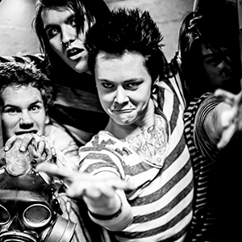
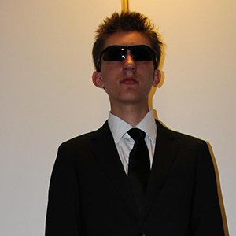
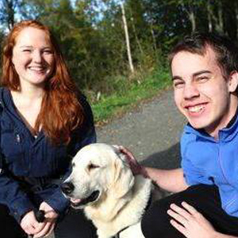

Om oss
50 Shades Of Green er nettbutikken for deg som elsker fargen grønn! Vi har alt det grønne du trenger for å komme deg gjennom dagen. Vi tar også i mot custom bestillinger av ting du ønsker i fargen grønn. Våre ompalompar har mange års erfaring med lakering av fargen grønn. 50 Shades Of Green er en miljøbevist bedrift.. Det vil si at vi vet hva miljø er....
Ole Jørgen Gabrielsen
President
olegab@ofgreen.no
Thy Thy Dang
Dagligleder
thydan@ofgreen.no
Adrian Hultengreen
Markedsfører
adrhul@ofgreen.no
Anders Brurok
Ryddegutt
ryddegutt@ofgreen.no